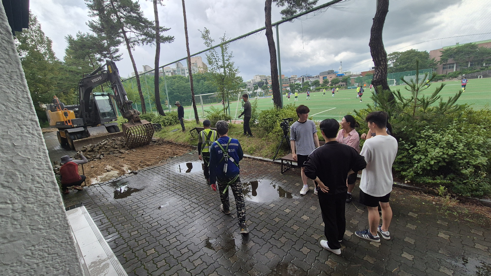

와!
과제입니다. 문제라도? 과제입니다. 문제라도? 과제입니다. 문제라도? 과제입니다. 문제라도? 과제입니다. 문제라도? 과제입니다. 문제라도? 과제입니다. 문제라도? 과제입니다. 문제라도? 과제입니다. 문제라도? 과제입니다. 문제라도? 과제입니다. 문제라도? 과제입니다. 문제라도? 과제입니다. 문제라도? 과제입니다. 문제라도? 과제입니다. 문제라도? 과제입니다. 문제라도? 과제입니다. 문제라도? 과제입니다. 문제라도? 과제입니다. 문제라도? 과제입니다. 문제라도? 과제입니다. 문제라도? 과제입니다. 문제라도? 과제입니다. 문제라도? 과제입니다. 문제라도? 과제입니다. 문제라도? 과제입니다. 문제라도? 과제입니다. 문제라도? 과제입니다. 문제라도? 과제입니다. 문제라도? 과제입니다. 문제라도? 과제입니다. 문제라도? 과제입니다. 문제라도? 과제입니다. 문제라도? 과제입니다. 문제라도? 과제입니다. 문제라도? 과제입니다. 문제라도? 과제입니다. 문제라도? 과제입니다. 문제라도? 과제입니다. 문제라도? 과제입니다. 문제라도? 과제입니다. 문제라도? 과제입니다. 문제라도? 과제입니다. 문제라도?
과제입니다. 문제라도? 과제입니다. 문제라도? 과제입니다. 문제라도? 과제입니다. 문제라도? 과제입니다. 문제라도? 과제입니다. 문제라도? 과제입니다. 문제라도? 과제입니다. 문제라도? 과제입니다. 문제라도? 과제입니다. 문제라도? 과제입니다. 문제라도? 과제입니다. 문제라도? 과제입니다. 문제라도? 과제입니다. 문제라도? 과제입니다. 문제라도? 과제입니다. 문제라도? 과제입니다. 문제라도? 과제입니다. 문제라도? 과제입니다. 문제라도? 과제입니다. 문제라도? 과제입니다. 문제라도? 과제입니다. 문제라도? 과제입니다. 문제라도? 과제입니다. 문제라도? 과제입니다. 문제라도? 과제입니다. 문제라도? 과제입니다. 문제라도? 과제입니다. 문제라도? 과제입니다. 문제라도? 과제입니다. 문제라도? 과제입니다. 문제라도? 과제입니다. 문제라도? 과제입니다. 문제라도? 과제입니다. 문제라도? 과제입니다. 문제라도? 과제입니다. 문제라도? 과제입니다. 문제라도? 과제입니다. 문제라도? 과제입니다. 문제라도? 과제입니다. 문제라도? 과제입니다. 문제라도? 과제입니다. 문제라도? 과제입니다. 문제라도?
자 여기서부터가 본론입니다~ 자 여기서부터가 본론입니다~ 자 여기서부터가 본론입니다~ 자 여기서부터가 본론입니다~ 자 여기서부터가 본론입니다~ 자 여기서부터가 본론입니다~ 자 여기서부터가 본론입니다~ 자 여기서부터가 본론입니다~ 자 여기서부터가 본론입니다~ 자 여기서부터가 본론입니다~ 자 여기서부터가 본론입니다~ 자 여기서부터가 본론입니다~ 자 여기서부터가 본론입니다~ 자 여기서부터가 본론입니다~ 자 여기서부터가 본론입니다~ 자 여기서부터가 본론입니다~ 자 여기서부터가 본론입니다~ 자 여기서부터가 본론입니다~ 자 여기서부터가 본론입니다~ 자 여기서부터가 본론입니다~ 자 여기서부터가 본론입니다~ 자 여기서부터가 본론입니다~ 자 여기서부터가 본론입니다~ 자 여기서부터가 본론입니다~ 자 여기서부터가 본론입니다~ 자 여기서부터가 본론입니다~ 자 여기서부터가 본론입니다~ 자 여기서부터가 본론입니다~ 자 여기서부터가 본론입니다~ 자 여기서부터가 본론입니다~ 자 여기서부터가 본론입니다~ 자 여기서부터가 본론입니다~ 자 여기서부터가 본론입니다~
여기까지입니다. 안녕히 가세요. 여기까지입니다. 안녕히 가세요. 여기까지입니다. 안녕히 가세요. 여기까지입니다. 안녕히 가세요. 여기까지입니다. 안녕히 가세요. 여기까지입니다. 안녕히 가세요. 여기까지입니다. 안녕히 가세요. 여기까지입니다. 안녕히 가세요. 여기까지입니다. 안녕히 가세요. 여기까지입니다. 안녕히 가세요. 여기까지입니다. 안녕히 가세요. 여기까지입니다. 안녕히 가세요. 여기까지입니다. 안녕히 가세요. 여기까지입니다. 안녕히 가세요. 여기까지입니다. 안녕히 가세요. 여기까지입니다. 안녕히 가세요. 여기까지입니다. 안녕히 가세요. 여기까지입니다. 안녕히 가세요. 여기까지입니다. 안녕히 가세요. 여기까지입니다. 안녕히 가세요. 여기까지입니다. 안녕히 가세요. 여기까지입니다. 안녕히 가세요. 여기까지입니다. 안녕히 가세요. 여기까지입니다. 안녕히 가세요. 여기까지입니다. 안녕히 가세요.